Bilancia: identità, banco attivo e parametri di base
Target: tecnico installatore / rivenditore.
Obiettivo
Dichiarare a quale banco appartiene la bilancia e quale banco è attivo, scegliere il tipo di configurazione (per banco, per bilancia o globale) e conoscere le sezioni della pagina Bilancia: quali toccare e quali lasciare di default.
Prerequisiti
- I banchi sono stati creati: Lista Banchi.
- I Collegamenti sono stati controllati.
Procedura
1. Apri la pagina Bilancia
Dopo aver creato i banchi si dichiara che cos'è questa bilancia. Dal menu Setup Bilancia, sezione Configurazione, tocca Bilancia.
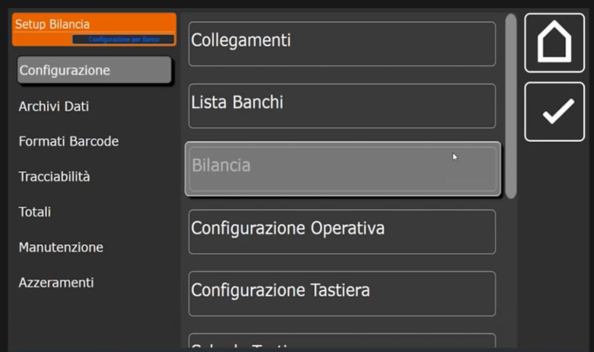
2. ID Bilancia: banco, numero e nome
La prima sezione è ID Bilancia. I campi sono Numero Banco, Numero Bilancia, Banco Attivo, Nome Bilancia, Tipo Configurazione e Configurazione Display.
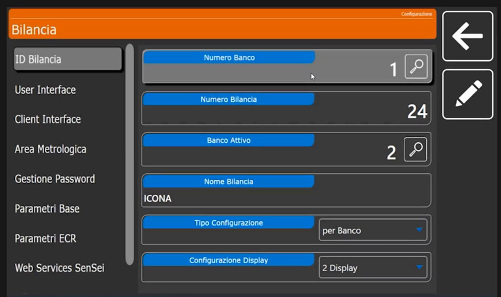
-
Numero Banco: il banco di riferimento della bilancia. Tocca la lente accanto al valore per aprire la lista dei banchi.
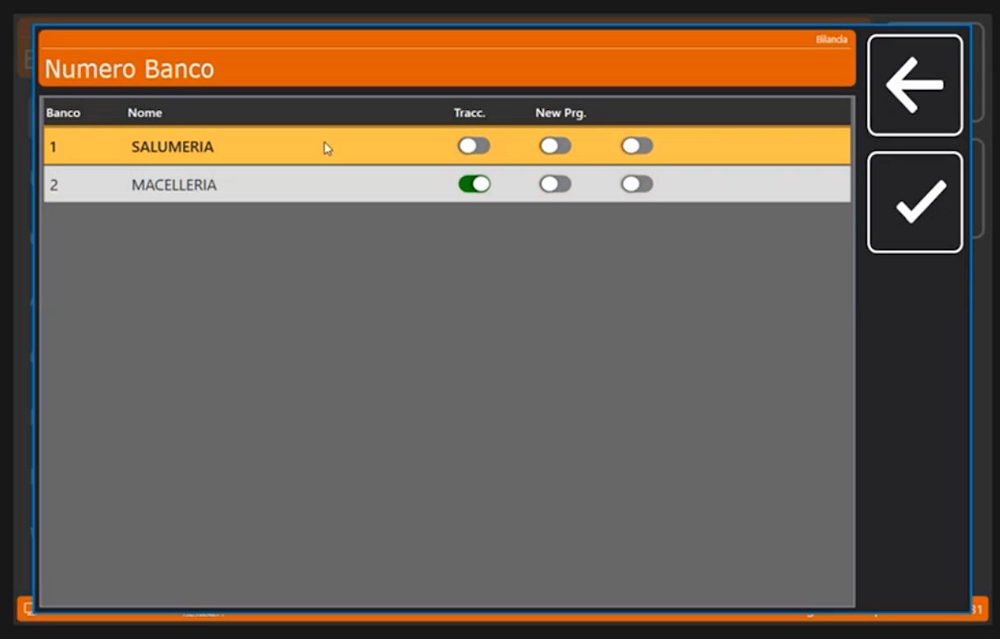
-
Banco Attivo: il banco attivo in questo momento. Può essere diverso dal banco di riferimento: per esempio si può tenere come riferimento il banco 1 e attivare momentaneamente il 2. Riporta il banco al valore voluto prima di uscire, per non dover riavviare la bilancia.
- Numero Bilancia: partendo dalla bilancia principale (il server) si dichiara 1; ma può essere anche la 24ª bilancia del banco. In un sistema di bilance collegate più bilance possono lavorare sullo stesso banco e condividere lo stesso database. Il numero non incide sul funzionamento: sono tutti punti di accesso al database.
- Nome Bilancia: nell'esempio ICONA.
3. Scegli il Tipo Configurazione
Il menu a tendina Tipo Configurazione propone Globale, per Banco e per Bilancia.
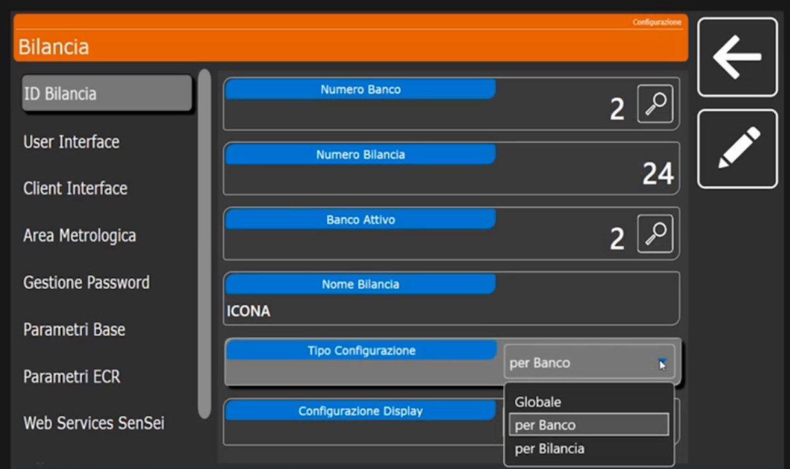
| Valore | Quando usarlo |
|---|---|
| per Banco | È il valore di default e va lasciato così. Le impostazioni valgono per tutto il banco: i settaggi fatti su una bilancia vengono riportati su tutte le altre collegate alla stessa rete e allo stesso banco. Adatto a salumeria, macelleria, frutta e verdura (che magari dovranno attivare il Self Service) |
| Globale | Tutte le programmazioni successive (dalle configurazioni tastiera ai formati etichetta) sono condivise da tutti i banchi presenti sulla bilancia |
| per Bilancia | Serve solo quando due o tre bilance sono collegate in rete sullo stesso banco e una di esse deve lavorare diversamente, per esempio in etichettatura con un layout grafico diverso da quello del banco |
Configurazione Display
Indica i display usati: nell'esempio 2 Display. Per il Self Service si usa un solo display, perché il secondo non esiste; non va confuso con il servizio rapido, che richiede i due display.
4. Sezioni a sinistra: legate al banco selezionato
Sulla sinistra si apre una serie di sezioni collegate al banco selezionato. Alcune sono da lasciare di default, altre vanno guardate.
User Interface. Di norma non si tocca: indica l'ambiente di lavoro, cioè la cartella dove la bilancia registra le sue configurazioni e gli eseguibili di riferimento. Campi: Cartella di Lavoro C:\Scale_UI, Nome Eseguibile FrontEnd.exe, Tipo Icone.
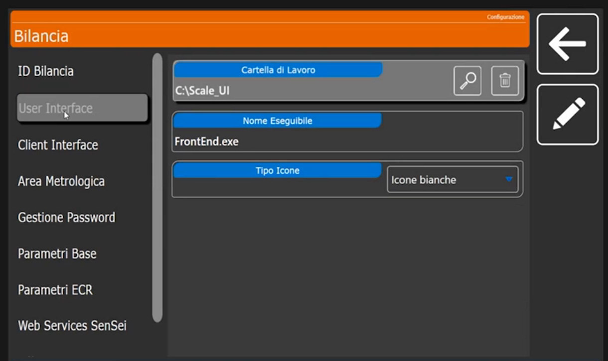
L'unico campo modificabile è Tipo Icone: Icone bianche, Icone nere (stile classico) o Icone Colorate, con cui in vendita alcuni tasti e funzioni si accendono in modo particolare.
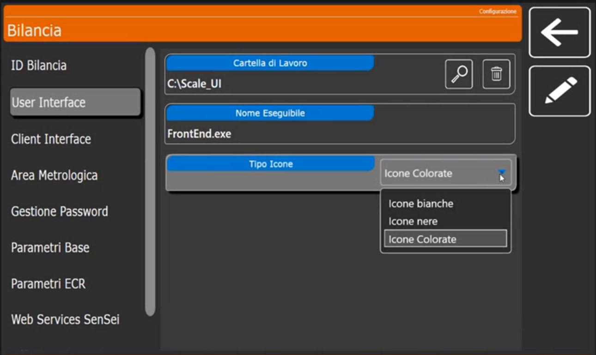
Client Interface. Riguarda la gestione dei client interfacciati: da non toccare. Campi: Cartella di Lavoro C:\Program Files (x86)\CUSTOM\Vis_Banchi\, Nome Eseguibile VIS_BNC.EXE, Timer Image Sequenza Pubblicitaria 10, Timer Elimina Code 5, Disabilita Cross Selling e Abilita Pubblicità Esterna (disattivati).
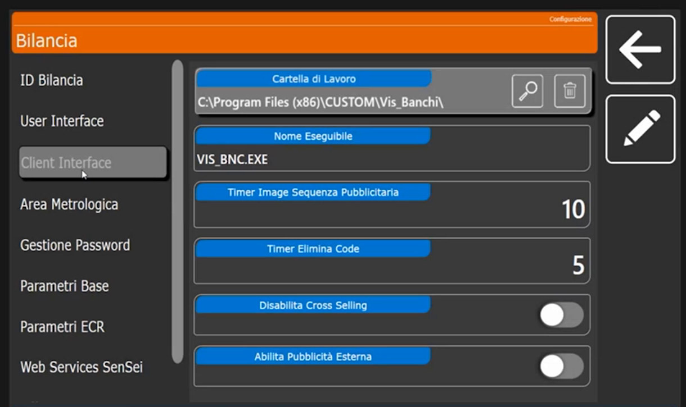
Area Metrologica. Offre un minimo di personalizzazione. L'area metrologica è inviolabile: è l'unica parte sotto vincolo metrologico. Si può solo scegliere dove mostrare i dati metrologici sul display posteriore: in alto o in basso, a destra o a sinistra, in orizzontale o in verticale. Lato Operatore e lato Cliente hanno ciascuno posizione verticale, posizione orizzontale e stile (Layout Orizzontale o Layout Verticale).
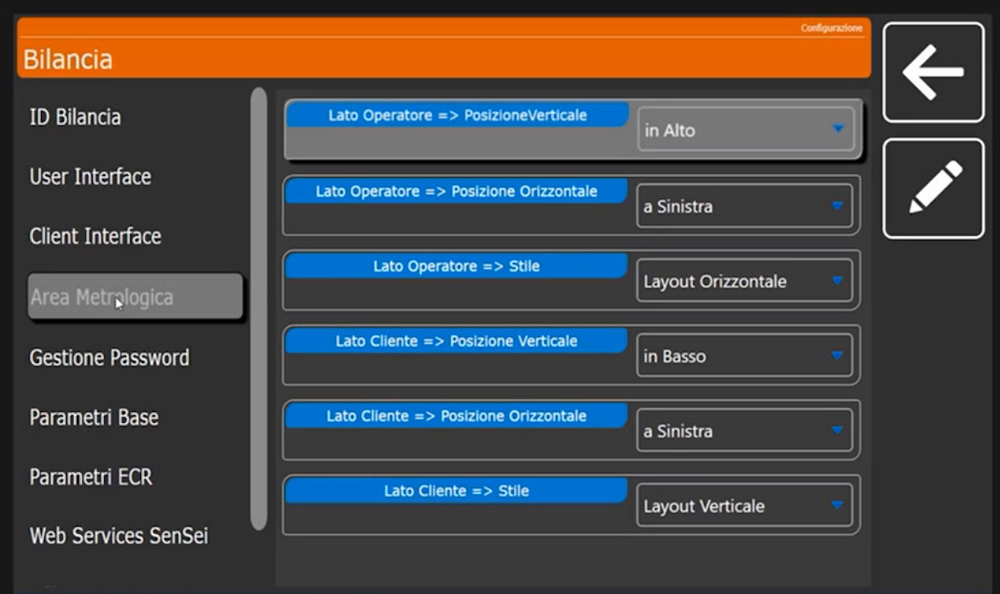
Gestione Password. Per le configurazioni particolari di un cliente conviene attivare le password: impediscono al cliente di entrare nella bilancia e sprogrammare o sconfigurare impostazioni che possono avere richiesto parecchio tempo. Si possono gestire sia in programmazione sia allo spegnimento dello strumento. Interruttori: Abilita Password Accesso Programmazione e Abilita Password Spegnimento, entrambi disattivati di default. A seconda del cliente e dell'impianto la funzione è sempre consigliabile.
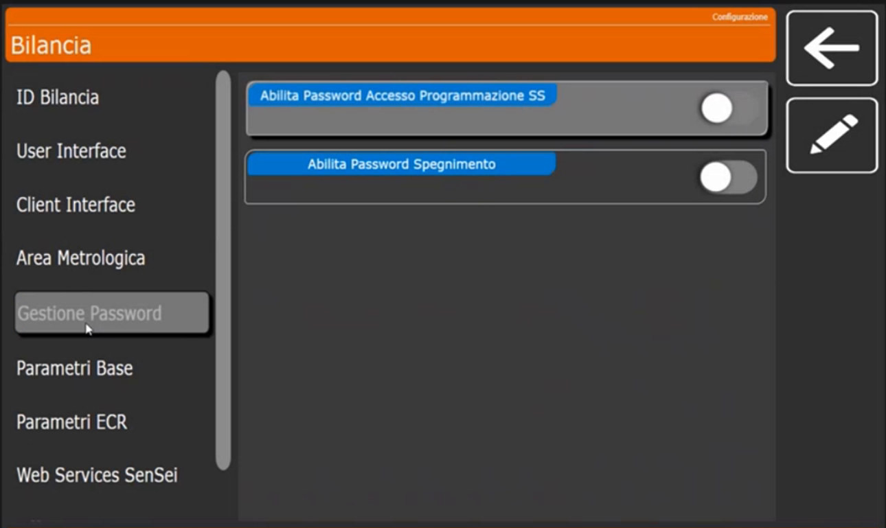
Parametri Base. Di default sono già impostati per la testina da 3 pollici (stampa fino a 80 mm di larghezza) e per una corretta gestione del touch e degli offset delle etichette. L'offset è la parte grafica in cui viene stampata l'etichetta: i contorni lasciati vuoti perché la carta esca correttamente. Di norma questa sezione non si tocca, salvo settaggi particolari in fase di emissione dell'etichetta. Campi: Suono Tocco Touch Alto, Luminosità Schermi, Offset Etichetta x (mm) 2, Offset Etichetta y (mm) 0, Avanzamento Stampa (mm) 5, Apri Cassetto dopo stampa scontrino (disattivato).
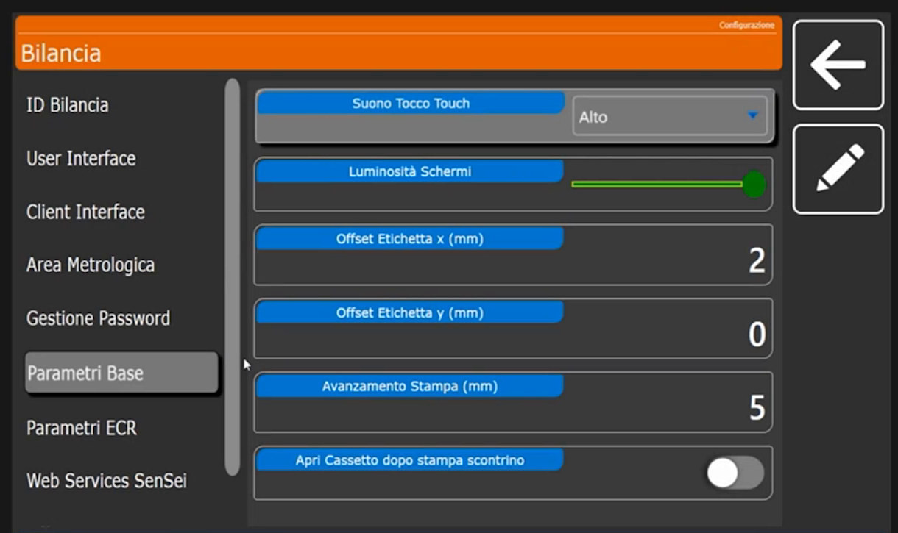
Parametri ECR. Servono a collegare un registratore di cassa in seriale. Il registratore deve usare il protocollo seriale XON/XOFF a 9600 baud, N, 8, 1.. Abilitando ECR Collegato la bilancia può stampare direttamente lo scontrino sul registratore: per farlo si crea un tasto con funzione Invio Scontrino a ECR (vedi Configurazione Tastiera). Gli altri interruttori sono Invio alla Chiusura Scontrino e Richiedi Codice Lotteria, tutti disattivati di default.
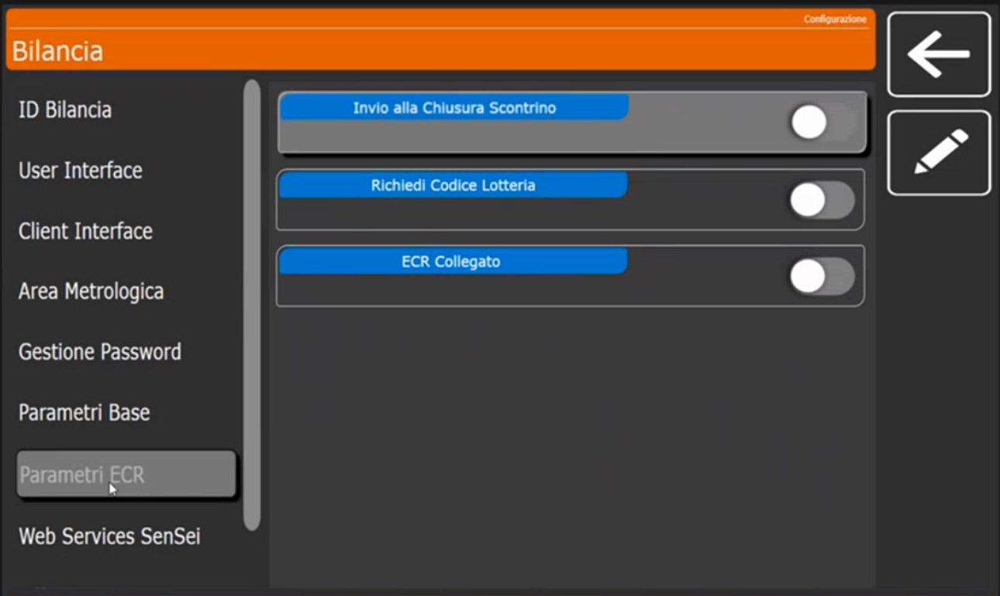
Web Services SenSei. Serve per la gestione con terminali esterni. Le opzioni oltre alla prima sono facoltative. Campi: WS SenSei - URL, WS SenSei - Terminal Id (0) e WS SenSei - Timeout (5).
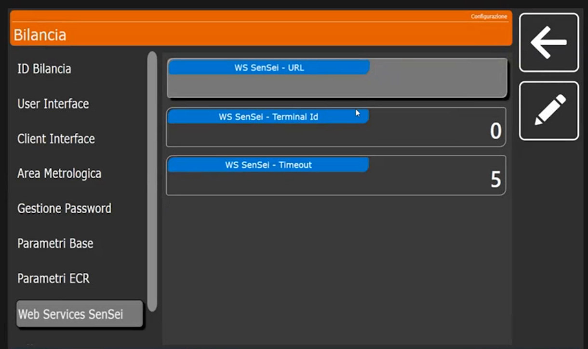
Verifica
In ID Bilancia compaiono Numero Banco e Banco Attivo voluti, il Numero Bilancia e il Tipo Configurazione per Banco.
Errori comuni
| Problema | Causa probabile | Rimedio |
|---|---|---|
| La bilancia mostra la tastiera di un altro banco | Banco Attivo diverso da quello atteso | Reimposta Banco Attivo |
| Una modifica su una bilancia non compare sulle altre | Tipo Configurazione impostato su per Bilancia | Riporta il valore a per Banco |
| Il cliente ha cambiato le impostazioni | Password di programmazione non attiva | Attiva Abilita Password Accesso Programmazione |
Prossimo passo
Prima di creare gli articoli bisogna dire alla bilancia come deve comportarsi, cioè in quale modalità deve lavorare: Configurazione Operativa.